1 — What DFTest does
DFTest is designed to support graph-based dataflow testing of Java source code. Given a Java method, it can:
- Derive the Control Flow Graph (CFG)
- Identify all DU-pairs and DU-paths
- Determine the test paths traversed by a provided test file
- Highlight which requirements are satisfied under the all-uses and all-DU-paths coverage criteria
- Produce an HTML coverage report across multiple methods
Because it builds and displays the CFG interactively, DFTest can also assist in designing and evaluating tests based on structural graph coverage, even without a test file.
2 — Exploring the interface
Launch DFTest
Download the latest JAR from the Downloads page and run it from a terminal:
java -jar dftest-1.3-all.jar
The GUI will open showing a default Java method already loaded and analysed.
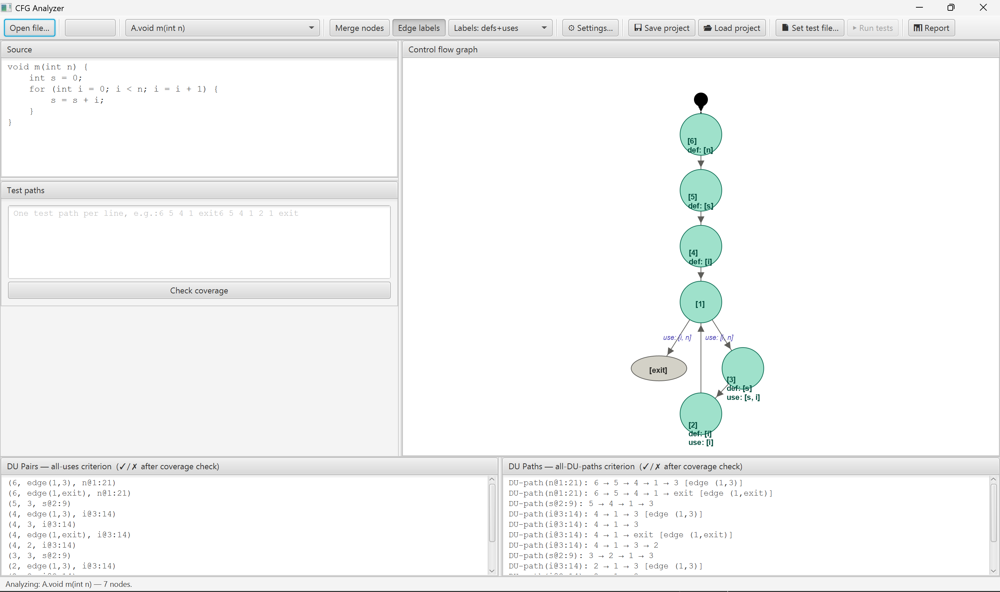
The window is divided into three main areas:
- Top-left — Java source code editor
- Right — Control flow graph
- Bottom — DU-Pairs and DU-Paths panels, with a variable filter
3 — Reading the CFG
Each node in the graph corresponds to a statement or group of statements in the source code. Nodes display the variables they define (def) and use. Edges carry the condition variable uses for decision nodes.
Click a node to highlight source code
Click on any node in the graph — for example, the node corresponding to
int s = 0;. The matching line in the source editor will be
highlighted, making the relationship between graph and code explicit.
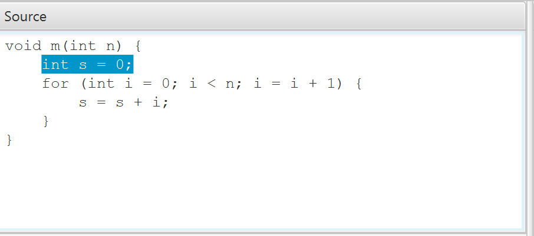
At the bottom of the screen you will find the DU-Pairs and DU-Paths computed for the current method.
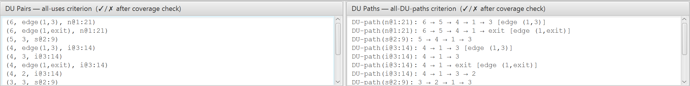
Each entry follows a straightforward notation:
(6, edge(1,3), n@1:21) — variable n (declared at line 1, col 21), defined at node 6, used at edge (1→3)
(5, 3, s@2:9) — variable s (declared at line 2, col 9), defined at node 5, used at node 3
DU-path(n@1:21): 6 → 5 → 4 → 1 → 3 [edge (1,3)] — a def-clear path from node 6 to the use of n at edge (1,3)
4 — Merging linear nodes
Sequences of nodes with no branching can be merged into a single basic block. This simplifies the graph and the DU-pair notation without losing information.
Enable node merging
Click the Merge nodes toggle in the toolbar.
Nodes that form an uninterrupted linear sequence will be combined.
Their merged name (e.g. [6,5,4]) reflects all original node ids.
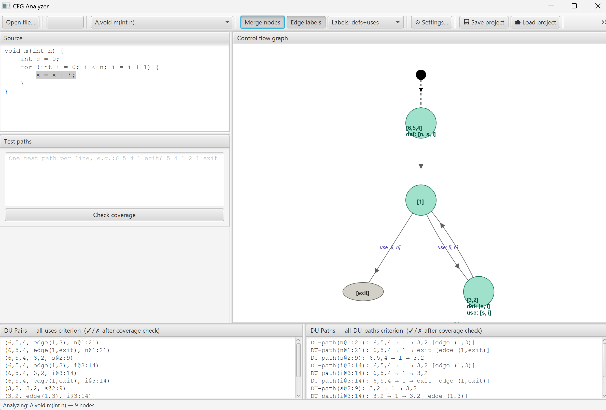
5 — Entering and checking test paths
Test paths are entered in the Test paths area below the source editor.
Each line is one path — a space-separated sequence of node ids ending in exit.
Type a test path
Enter a test path, for example:
6,5,4 1 exit
You may use either the merged node name 6,5,4 or the individual ids
6 5 4 — both are accepted. Coverage is evaluated automatically as
soon as you finish typing and move focus away, or press Check coverage
to evaluate immediately.
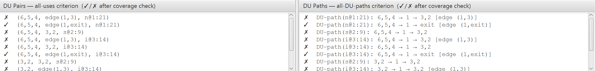
Each DU-pair and DU-path is now prefixed with a coverage mark:
- ✓ — satisfied by simple tour (exact subpath)
- ⍻ — satisfied via sidetrip (test may loop between required nodes)
- (⍻) — satisfied via detour (required nodes appear as ordered subsequence)
- ✗ — requirement not yet satisfied
- ● — satisfied specifically by the currently selected path
The status bar shows a hierarchical summary, e.g. Simple: 7/10 pairs, 7/10 paths | +Sidetrip: 1/10, 1/10. Sidetrip and detour sections are omitted when they add no coverage over the previous level.
6 — Clicking paths and DU entries
Visualise a test path on the graph
Click on any line in the Test paths area. The corresponding nodes will be highlighted in the graph, giving a visual confirmation of the path you entered.
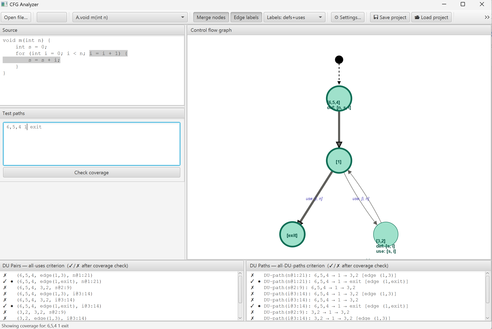
Import a DU-path as a test path
Click on any entry in the DU-Paths panel. The node sequence of that path is automatically added to the Test paths area, ready to be completed and checked. For example, clicking an uncovered path such as:
DU-path(n@1:21): 6,5,4 → 1 → 3,2 [edge (1,3)]
will insert 6,5,4 1 3,2 into the test path area. You can then
extend it to reach exit if desired.
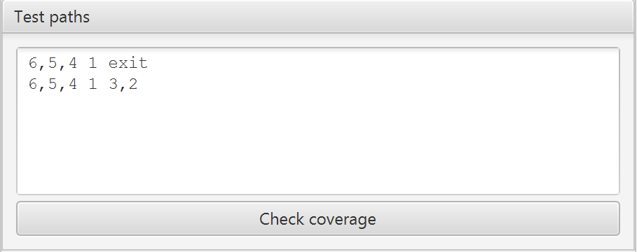
7 — Coverage matrix
The coverage matrix gives a structured overview of which tests cover which requirements, and helps identify redundant tests or a minimal test subset.
Open the coverage matrix
Click 📊 Matrix in the toolbar. A non-modal dialog opens with two tabs — one for DU-pairs, one for DU-paths — each showing a test × requirement table. Rows are requirements; columns are individual test paths.
Use the method selector at the top of the dialog to switch to any other method in the source without closing the window.
The toolbar inside the matrix panel offers two overlays and a preference selector:
- ⚠ Mark redundant — highlights tests whose coverage is a strict subset of the remaining tests. A test that covers nothing is also considered redundant.
- ★ Minimal cover — highlights a greedy minimal subset of tests that together cover every coverable requirement. When active, a Combined column appears at the right edge showing the union of coverage achieved by this subset alone, making it easy to see what the reduced suite achieves.
The Preference buttons control which tour quality counts as satisfying a requirement — evaluated per requirement with hierarchical fallback:
- ✓ Direct — a direct (simple) tour is required. If no test can tour the requirement directly, a sidetrip tour is accepted as a fallback; if that too is impossible, a detour is accepted.
- ⍻ Sidetrips — a direct or sidetrip tour counts; a detour is only accepted when neither is achievable for that requirement.
- (⍻) Detours — any tour counts regardless of quality (most relaxed).
Cells that were covered but fall below a requirement's effective threshold are shown dimmed — the tour occurred, but a better-quality tour exists for that requirement so this one is not needed.
8 — Generating a coverage report
Export an HTML report
Once you have test paths for one or more methods, click the 📊 Report button on the right of the toolbar. A save dialog will appear; choose a location and the report will open automatically in your browser.
The report includes, for each method: a coverage summary, the test paths used, and the full annotated list of DU-pairs and DU-paths with ✓/✗ markers. An overall summary across all methods is shown at the top.
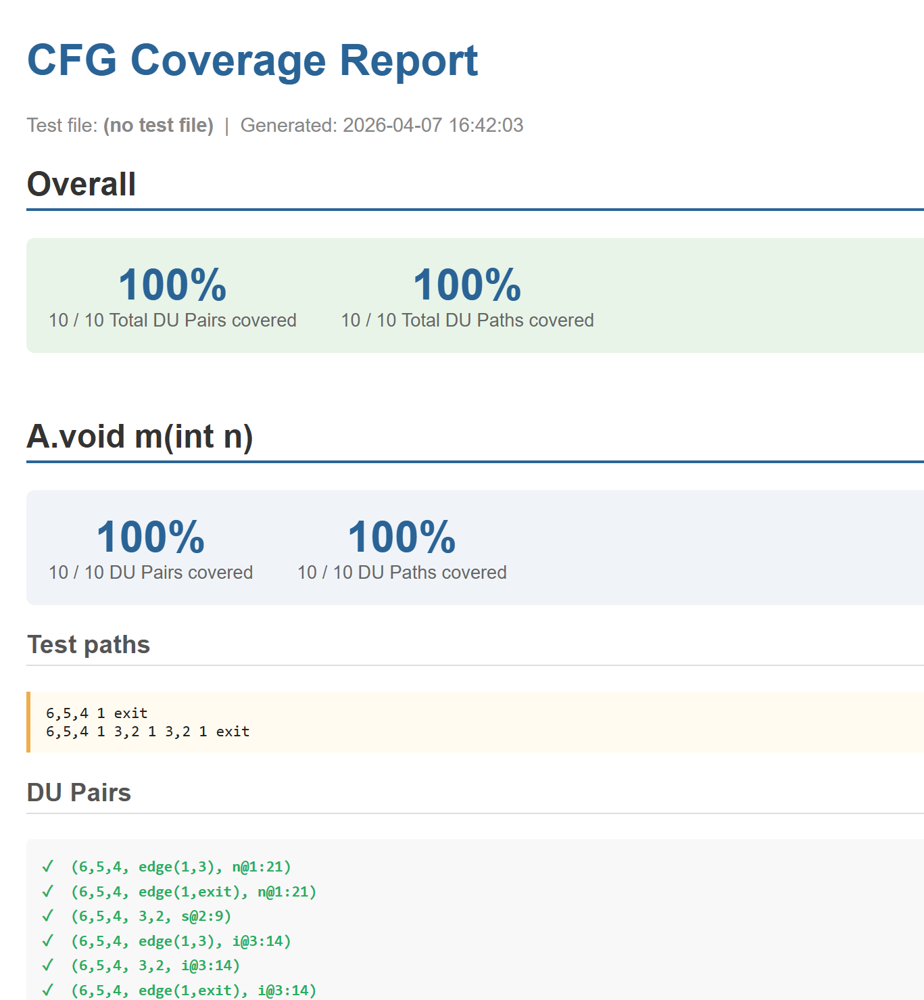
9 — Saving and loading a project
Closing DFTest without saving will discard all test paths and coverage results. Use the project system to preserve your work.
Save a session
Click 💾 Save project in the toolbar. A .cfgproject
file will be saved containing the source code, test paths, coverage results,
and configuration. Enable Embed source in the save dialog if
you want the source to travel with the project file rather than referencing an
external path.
To resume, click 📂 Load project and select the file. Coverage annotations are restored automatically on load.
10 — Working with Java files
Open a .java file
Click Open file… and select any .java source file.
If the class contains multiple methods, use the method selector dropdown
in the toolbar to switch between them — each has its own CFG, DU-pairs, and
test paths.
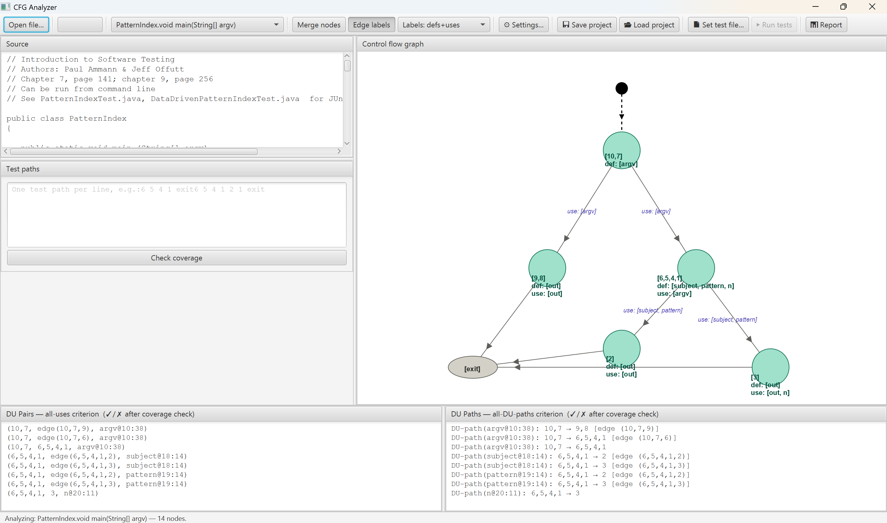
11 — Importing traces from a test file
Instead of entering test paths manually, DFTest can run your test code, collect execution traces, and populate the test path area automatically.
Set a test file and run
Click 📄 Set test file… in the toolbar. In the dialog, browse
to a .java file containing test methods. Tests are identified by:
- Methods annotated with
@Test(JUnit 4/5) - Methods whose name starts with
test
If your test file uses JUnit, click Add JUnit 5 (or Add JUnit 4)
in the dialog — DFTest will search your local Maven repository and add the
required jars automatically. If automatic discovery fails, add the jars manually
via Add jar…, or remove the JUnit imports and annotations from
the test file (the test* naming convention will still be recognised).
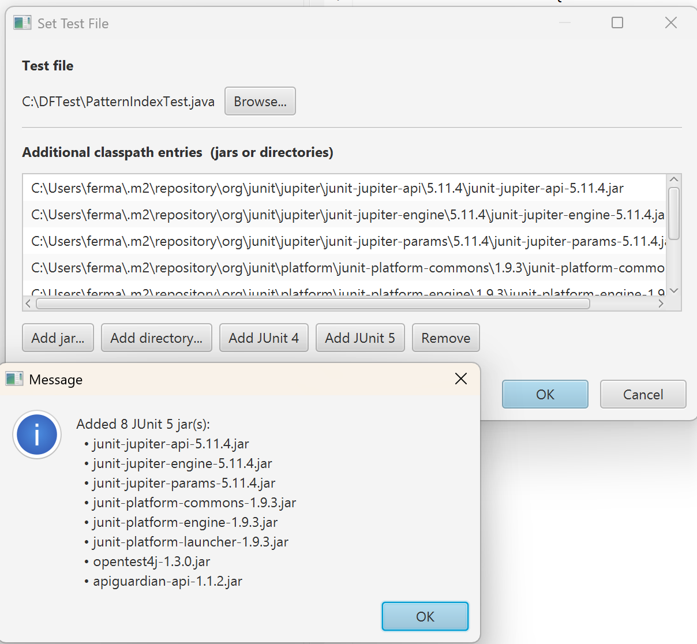
Run the tests
Click ▶ Run tests in the toolbar. DFTest instruments and runs the test suite once for every method in the source, collecting execution traces for all of them in a single pass. The status bar shows progress as each method is processed. Traces are added to the Test paths area for whichever method is currently displayed, and stored for all others. Each path is annotated with the test method name as a comment, e.g.:
20 19 18 17 16 15 14 2 4 13 12 11 5 7 6 5 3 2 1 exit // testPatternFound
Coverage is evaluated automatically once the traces are loaded. Use Check coverage to re-evaluate if you edit the paths manually.
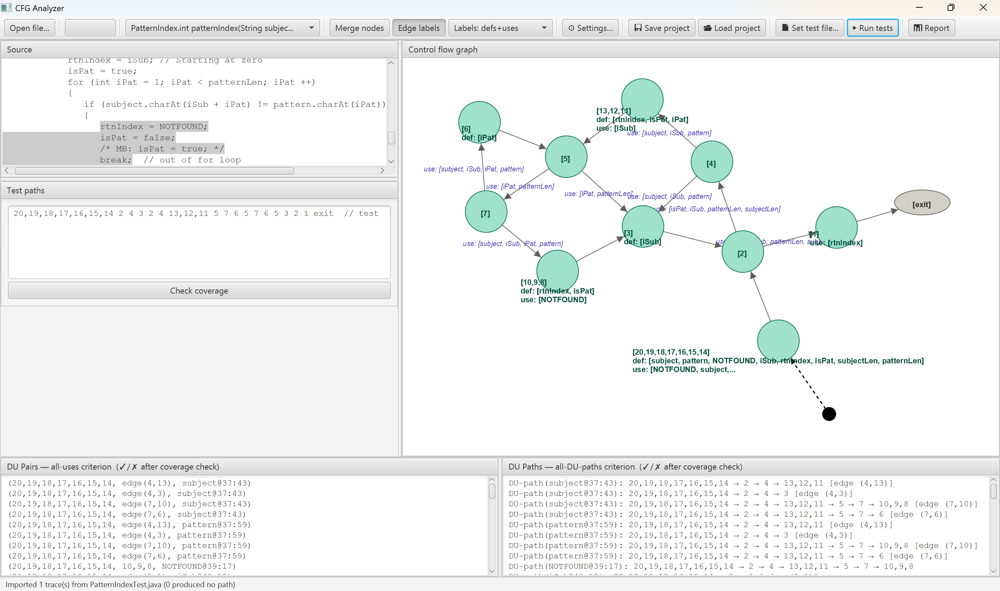